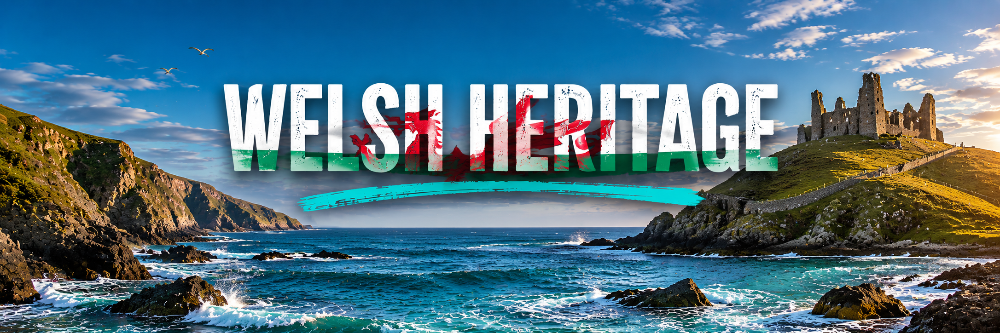
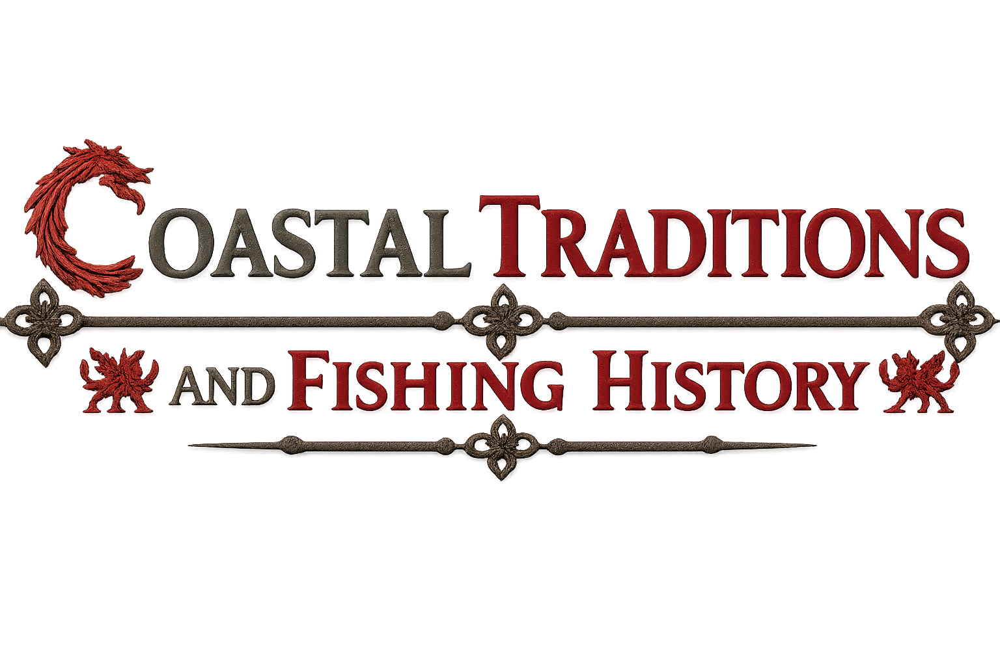

The Welsh coastline has played an important role in the history of Wales for thousands of years. Early communities settled along the coast to take advantage of fishing, trade and access to the sea. During the medieval period, castles and fortifications were built along the shoreline to defend against invasions and protect important ports. Coastal towns such as Tenby grew into busy trading centres, connecting Wales with Ireland and the rest of Britain. The coastline is also closely linked to Welsh culture, legends and maritime traditions, with generations relying on the sea for their livelihoods. Today, the Welsh coast is celebrated for its rich heritage, historic landmarks and stunning natural beauty, attracting visitors from around the world.
One of the most famous Welsh legends tells the story of a fierce battle between a red dragon and a white dragon. According to the tale, the dragons fought beneath the ground, causing chaos and suffering throughout Britain. The young Merlin advised King Vortigern to uncover the dragons, and when released, the red dragon defeated the white dragon. The red dragon came to symbolise Wales and is now proudly displayed on the Welsh flag as a symbol of strength, resilience and national identity.
Cantre'r Gwaelod is a legendary lost kingdom said to have existed beneath what is now Cardigan Bay. Protected by sea walls and floodgates, the fertile land was ruled by King Gwyddno. According to the legend, a gatekeeper neglected his duties and left the floodgates open during a storm, allowing the sea to flood the kingdom. It is said that on calm days, the bells of the drowned kingdom can still be heard beneath the waves.
This famous Welsh legend tells the story of a farmer who fell in love with a beautiful woman who emerged from a lake called Llyn y Fan Fach. The mysterious woman agreed to marry him on the condition that he never strike her three times. Years later, after breaking this promise, she returned to the lake, taking her animals with her. Their children became known as the Physicians of Myddfai, famous throughout Wales for their healing knowledge and medical skills.
Although King Arthur is known throughout Britain, many legends place him in Wales. Welsh stories describe Arthur as a powerful warrior who defended Britain against invaders and embarked on heroic adventures with his Knights of the Round Table. Several locations across Wales are linked to Arthurian legends, including mountains, caves and ancient stones. These stories have become an important part of Welsh folklore and continue to inspire people today.
| Welsh | English |
|---|---|
| Croeso i Gymru | Welcome to Wales |
| Croeso i Sir Benfro | Welcome to Pembrokeshire |
| Mwynhewch eich ymweliad | Enjoy your visit |
| Cadwch yn ddiogel | Stay safe |
| Dilynwch gyfarwyddiadau'r tywysydd | Follow the guide's instructions |
| Gwyliwch y tonnau | Watch the waves |
| Arhoswch gyda'r grŵp | Stay with the group |
| Antur ar yr arfordir | Adventure on the coast |
| Archwiliwch yr arfordir | Explore the coastline |
| Mwynhewch y golygfeydd | Enjoy the views |

For centuries, the Welsh coastline has played a vital role in the lives of local communities. Fishing villages developed around natural harbours, with generations of families relying on the sea for food, trade and employment. Traditional fishing methods were passed down through the years, and coastal towns such as Tenby, Fishguard and Milford Haven became important centres for the fishing industry. The sea also influenced local customs, festivals and folklore, helping to shape the unique culture of coastal Wales.
Fishing remains an important part of Welsh heritage today, although modern technology has changed many traditional practices. Local fishermen continue to catch species such as crab, lobster, mackerel and sea bass from the waters around Pembrokeshire. Visitors can still experience this rich maritime history by exploring historic harbours, watching fishing boats return with their daily catch and learning about the traditions that have connected Welsh communities to the sea for hundreds of years.
The West Wales coastline is home to a rich variety of wildlife, making it one of the most important conservation areas in the United Kingdom. The cliffs, beaches and surrounding waters provide habitats for seals, dolphins, porpoises and a wide range of seabirds, including puffins, razorbills and guillemots. Protected areas along the coast help preserve these natural environments, allowing wildlife to thrive while giving visitors the opportunity to experience nature in its natural setting.
Conservation efforts play a vital role in protecting the beauty and biodiversity of the Welsh coastline for future generations. Organisations and local communities work together to monitor wildlife populations, protect nesting sites and reduce pollution in coastal waters. Visitors are encouraged to respect the environment by following designated paths, avoiding disturbance to wildlife and supporting sustainable tourism practices. These efforts help ensure that the unique landscapes and wildlife of West Wales continue to flourish for years to come.